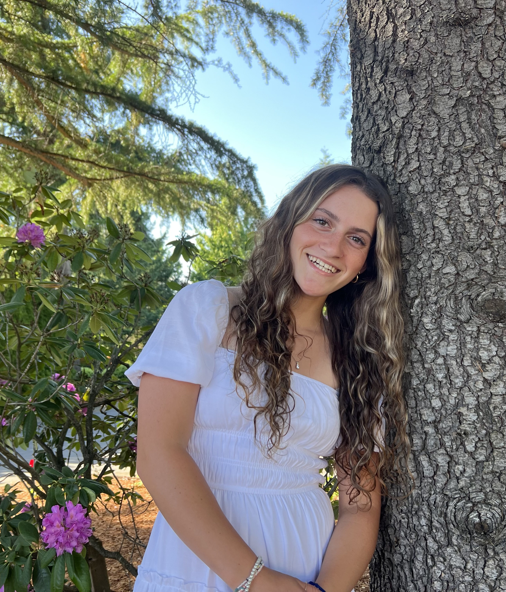

Muirin Foushee
I'm 18 and this is my second semester. I have 3 brothers and 3 doggies that I love very much. I play soccer and enjoy doing anything sports related.
My favorite scripture is Alma 32:27, “But behold, if ye will awake and arouse your faculties, even to an experiment upon my words, and exercise a particle of faith, yea, even if ye can no more than desire to believe, let this desire work in you, even until ye believe in a manner that ye can give place for a portion of my words."